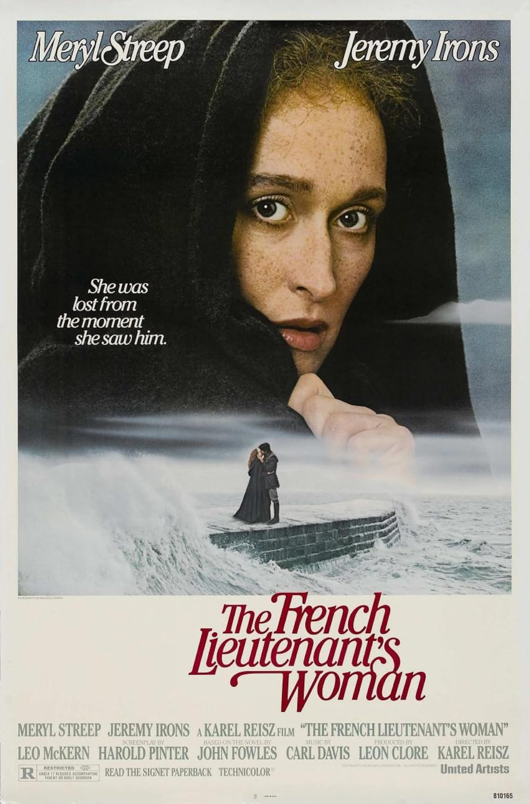

The French Lieutenant's Woman
54th Academy Awards
(Oscars 1982)
5 Nominations, 0 Awards
| Watched |
| Nominations | ||
|---|---|---|
| Category | Nominees | Result |
| Actress in a Leading Role | Meryl Streep | Nominated |
| Writing (Screenplay Based on Material from Another Medium) | Harold Pinter | Nominated |
| Film Editing | John Bloom | Nominated |
| Art Direction | Ann Mollo and Assheton Gorton | Nominated |
| Costume Design | Tom Rand | Nominated |